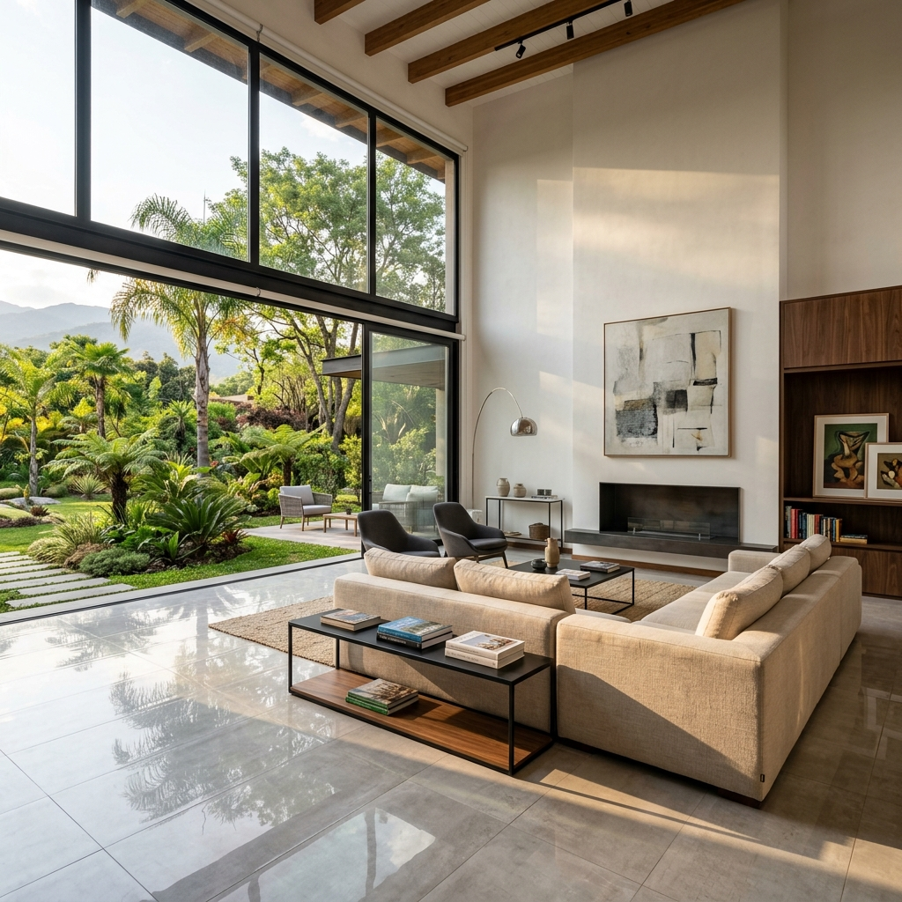
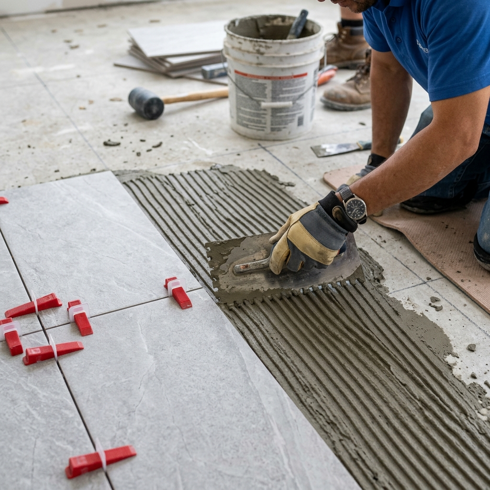

¿SE LEVANTAN LOS
CERÁMICOS DEL PISO?
Es uno de los problemas más frustrantes de la construcción tradicional en Tucumán. Analizamos las verdaderas razones físicas y le explicamos la solución definitiva.
La física detrás del desprendimiento de baldosas en Tucumán
En las viviendas de Yerba Buena, San Miguel de Tucumán y alrededores, el clima presenta una alta amplitud térmica diaria y humedad ambiente persistente. Estos factores someten a los pisos a continuas dilataciones y contracciones. Cuando una obra tradicional húmeda no se calcula con precisión, las tensiones mecánicas acumuladas buscan el eslabón más débil: la unión entre el cerámico, el pegamento y la carpeta cementicia, provocando levantamientos espectaculares en forma de V.
Contrario a la creencia popular de que "el cerámico vino fallado" o "el pegamento estaba vencido", el levantamiento de un piso responde casi siempre a errores de ejecución en obra. La omisión de juntas elásticas en los perímetros de las habitaciones, la falta de doble encolado en formatos medianos y grandes, y la prisa al colocar baldosas sobre carpetas aún verdes (húmedas) son las verdaderas causas.

El uso de llana dentada adecuada y doble encolado garantiza una superficie de contacto del 100%.
Selector de Diagnóstico de Daños
Seleccione el síntoma visual de su piso para diagnosticar la causa técnica específica y ver su solución.
Presión por dilatación lineal
Causa Física y Diagnóstico Técnico
Ocurre cuando los cerámicos se expanden debido al calor o la humedad del ambiente y no encuentran juntas de dilatación elástica. Al chocar de frente, la fuerza de compresión supera la adherencia del pegamento y las piezas se levantan del suelo de forma violenta.
¿Cómo se repara profesionalmente?
Se deben retirar las baldosas levantadas y picar todo el pegamento viejo hasta llegar a la carpeta rugosa y firme. Luego, se deben reinstalar utilizando pegamento flexible (tipo C3) y, fundamentalmente, dejar juntas perimetrales libres de 10mm en todo el contorno de las paredes, disimuladas por el zócalo.
Guía de Reparación y Colocación Profesional
Para asegurar que un piso no vuelva a fallar jamás, Constructora ByB sigue este protocolo técnico estricto.
Limpieza Profunda
Es indispensable retirar todo resto de pegamento anterior mediante picado mecánico. La carpeta debe quedar libre de polvo, grasa o revoque suelto que impida la adherencia.
Barrera Hidrófuga
Si se detecta humedad de cimientos, se debe aplicar un mortero hidrófugo flexible o pintura asfáltica transitable antes de colocar el nuevo adhesivo para evitar futuras eflorescencias.
Doble Encolado
Se unta pegamento con la llana dentada tanto en el suelo como en el revés de la baldosa. Esto previene burbujas de aire internas que debilitan el soporte mecánico.
Juntas Libres
Se instalan niveladores de piso respetando juntas de colocación mínimas de 3mm, y juntas de dilatación perimetrales de 10mm rellenas con sellador elástico de poliuretano.
¿Qué pegamento o adhesivo elegir? Ficha de Rendimiento
| Tipo de Adhesivo | Material del Piso | Flexibilidad / Elasticidad | Soporta Cambios Térmicos | Recomendado por ByB |
|---|---|---|---|---|
| Pegamento Estándar (C1) | Cerámicos tradicionales (pasta roja / blanca) | Baja o nula | No recomendado para exteriores o sol pleno | Solo interiores chicos |
| Pegamento Impermeable (C2) | Porcelanatos estándar y zonas húmedas (baños) | Media | Moderado (interiores residenciales) | Adecuado residencial |
| Adhesivo Flexible Premium (C3) | Porcelanatos de gran formato, losa radiante, exteriores | Alta (deformable S1/S2) | Excelente (ideal para Tucumán) | Altamente recomendado |
¿Cansado de rajaduras y humedades? Pásese a la Construcción en Seco
La construcción tradicional húmeda (ladrillos y hormigón colado) acumula miles de litros de agua durante la obra que tarda años en evaporarse, generando fisuras por secado y humedad capilar ascendente. Además, es un bloque de rigidez absoluta que sufre enormemente ante los asentamientos de suelo de Tucumán.
Al construir su casa o ampliación con el sistema de **Steel Framing** y **Construcción en Seco** de Constructora ByB, usted elimina estos problemas por completo:
- check_circle Absorción elástica de movimientos: Las uniones estructurales del acero galvanizado y el emplacado de paneles permiten micro-deformaciones sin rajaduras.
- check_circle Inmunidad a la humedad: Barreras hidrófugas multicapa (Tyvek / Wichi) que impiden el paso del agua desde los cimientos y el exterior, manteniendo sus revestimientos impecables.
- check_circle Aislamiento acústico y térmico: Rellenos de lana de vidrio o EPS que amortiguan los ruidos de pisadas y golpes en entrepisos y plantas altas.

Construya sin escombros, sin parches y con precisión milimétrica en Yerba Buena.
Preguntas Frecuentes
¿Puedo reutilizar los mismos cerámicos que se levantaron?
Sí, siempre y cuando no se hayan rajado al levantarse. Sin embargo, debe limpiar minuciosamente toda la costra de pegamento seco pegada detrás del cerámico usando una amoladora con disco de desbaste o espátula metálica. Si no retira el pegamento viejo, la pieza quedará más alta que el resto del piso al reinstalarla.
¿Cómo detecto si mi piso cerámico está a punto de levantarse?
El síntoma principal es un sonido hueco (como a tambor) al dar golpecitos suaves sobre la baldosa con el nudillo o el mango de un destornillador. Si al caminar nota que las juntas de pastina se están resquebrajando o saliendo en forma de polvo, es señal de que las piezas se han desprendido de la carpeta y la presión térmica podría levantarlas en cualquier momento.
¿Qué es el doble encolado y por qué es obligatorio?
Consiste en aplicar adhesivo cementicio tanto en la carpeta del suelo como en el reverso de la baldosa cerámica o porcelanato usando la llana. Esta técnica asegura que no queden huecos de aire bajo la pieza. Los huecos debilitan la adherencia y facilitan que la humedad debilite el pegamento, lo que finalmente causa los desprendimientos.